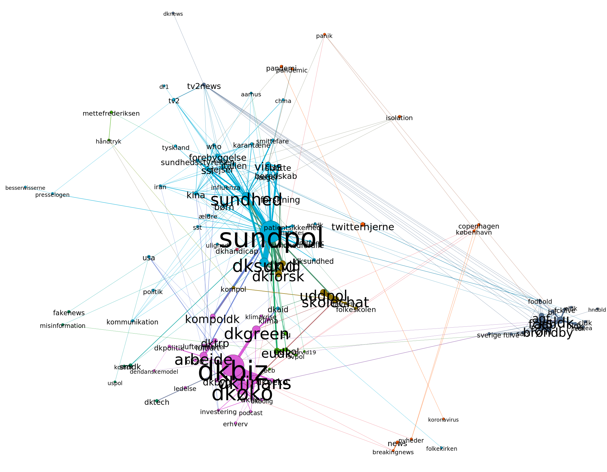

1. Introduktion
Per 1. april 2020 er 3.092 danskere bekræftet smittet med covid-19 og 104 danskere har mistet deres liv i relation til den globale corona-epidemi [1]. Også økonomisk, politisk og socialt har epidemien sat sine tydelige spor, i Danmark særligt siden regeringen den 11. marts lukkede store dele af landet ned. Med epidemien følger en række komplekse beslutninger og overvejelser, der skal foretages i løbet af kort tid og med ingen eller begrænsede fortilfælde; hvem og hvor mange skal testes, kan vores børn lege med hinanden, hvordan vil det påvirke beskæftigelsen, har vi råd til en klimaomstilling efter epidemien, og så videre. Det er overvejelser, som den danske offentlighed løbende bidrager til.
Ved Copenhagen Center for Social Data Science (SODAS) på Københavns Universitet undersøger vi løbende, hvilke temaer og problemstillinger corona-epidemien rejser i den danske offentlige debat. Vi er særligt interesseret i hvordan debatten udfolder sig mellem forskellige aktører, såsom myndigheder, politikere, nyhedsmedier og borgere, og hvordan corona-krisen påvirker vores forståelse af og opmærksomhed omkring andre presserende udfordringer og problemer, såsom klima. Dette gør vi med afsæt i tværfaglige metoder og kompetencer i krydsfeltet mellem data- og socialvidenskab, der gør os i stand til at indsamle og analysere store ustrukturerede tekst-data fra sociale medier og andre digitale platforme. Indeværende undersøgelse er og muliggjort af en mindre straksbevilling fra Københavns Universitets Samfundsvidenskabelige Fakultet samt via midler og støtte fra SODAS og DISTRACT forskningsprojektet, der er finansieret af det Europæiske Forskningsråd (ERC).
2. Hvad tweetesr der danske Twitter-brugere om i relation til corona-epidemien i Danmark?
Vores primære formål er i første omgang at undersøge de corona-relaterede temaer, som diskuteres i det danske twitter-landskab via et fokus på hashtags. Som et første forsøg på at operationalisere hvilke corona-relaterede problemstillinger der er opstået i Danmark, har vi fokuseret på at analysere de hashtags, der bruges på Twitter. Hashtags bruges ofte til at kan bruges på mange måder og af mange årsager, hvoraf én er at opsummere etsit budskab eller til at ‘tagge’ et indlæg i relation til en og en anden er at ‘tagge’ sit budskab, så det på platformen bliver indlejret i en større debat. Som sådan kan hashtags, og særligt sam-forekomster af dem, indikere temaer i en twitter-debat (såkaldt ‘co-hashtag’ analyse) (REF?).
Figur 1 viser et såkaldgt co-hashtag netværk baseret på hele vores samlede rensede datasæt for hele den undersøge periode (altså 24/2 til 24/3 2020). Hver cirkel repræsenterer et hashtag. En streg mellem to cirkler viser, at en Twitter-bruger har sammenkædet de to hashtags, ved at bruge dem i samme tweet. Størrelsen på cirklen indikerer hvor ofte det pågældende hashtag er blevet brugt, og tykkelsen på stregerne mellem cirklerne indikerer, hvor ofte de to hashtags bliver brugt i samme tweet. Netværket er visualiseret via brug af en algoritme, der for overskuelighedens skyld trækker forbundne hashtags tættere sammen og skubber de ikke-forbundne fra hinanden.

3. Hvad tweetesr der danske Twitter-brugere om i relation til corona-epidemien i Danmark?
Figur 2 viser hashtag-netværket i perioden op til nedlukningen (24/2-8/3), hvor særligt to tema-klynger træder tydeligt frem som dominerende i debat-landskabet(foruden en mindre om sport og fodbold) grupper af hashtags er tilstede:
{kind=link}
- Den [blå] gruppe af hashtags, der overordnet handler om sundhed generelt [fx ‘sundpol’, ‘sundhed’], sundhedsmyndighederne og deres indsats specifikt ift. epidemien [fx ‘forebyggelse’, ‘beredskab’] samt lande, der er særligt ramt af epidemien relateret til pandemien [fx Italien og Kina]. Vi refererer herefter til denne klynge som SUND.
- Den [lilla] gruppe af hashtags, der overordnet omhandler finansielle emner (fx dkbiz, dkfinans), nationaløkonomi (fx dkøko, dktrp, dkbyg) og dansk (økonomisk) politik (fx kompoldk, dendanskemodel), herunder i snitfladen til grøn omstilling og klimapolitik (fx dkgreen, klima), der peger på en mere generel relation mellem corona- og klimakrise i den danske offentlige debat. Vi refererer herefter til denne klynge som ØKOPOL.
- En lille klynge gruppe af mellem-hyppigt brugte uddannelses- [fx skolechat, folkeskolen, uddpol] og forskningsrelaterede hashtagsord [dkforsk] (UDDAN).
- En lille klynge gruppe af mindre hyppigt bruge hashtags ord relateret til EU og udenrigspolitik [fx eudk] (UDPOL).
- En klynge gruppe af mindre hyppigt bruge hashtags ord relateret til fodbold og håndbold (SPORT), som i øvrigt særligt relaterer sig specifikt til hashtagget ne ‘tv2news’. og ‘panik’ samt til ØKOPOL-klyngen gruppen.
3. Her kommer der lige nogle fine line-plots
Figur 3 viser hashtag-netværket i perioden op til nedlukningen (24/2-8/3), hvor særligt to tema-klynger træder tydeligt frem som dominerende i debat-landskabet(foruden en mindre om sport og fodbold) grupper af hashtags er tilstede:


[1] https://www.ssi.dk/aktuelt/sygdomsudbrud/coronavirus - tal fra d. 1/4-20 kl. 14.00